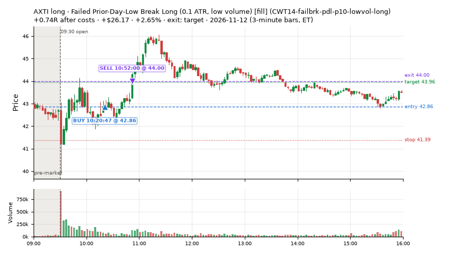
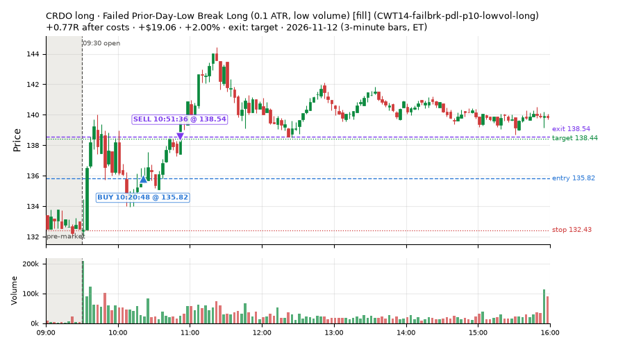
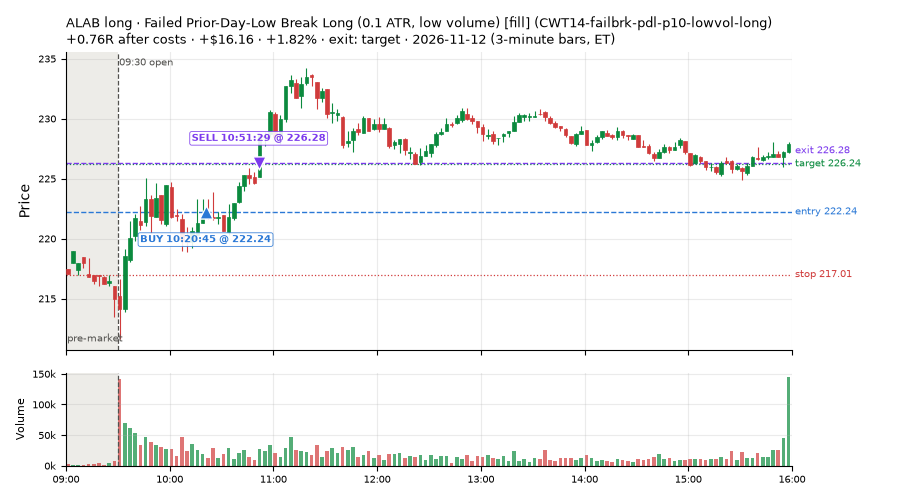
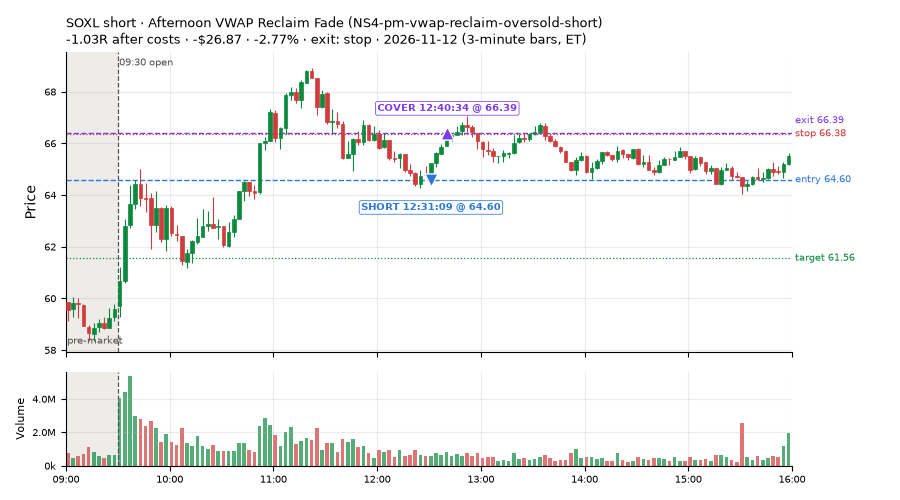
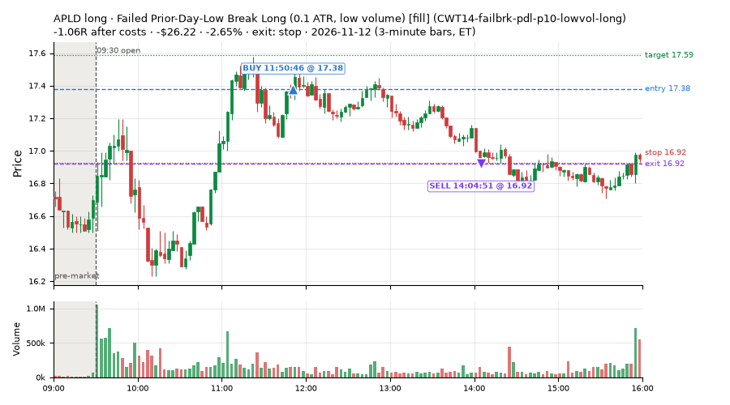
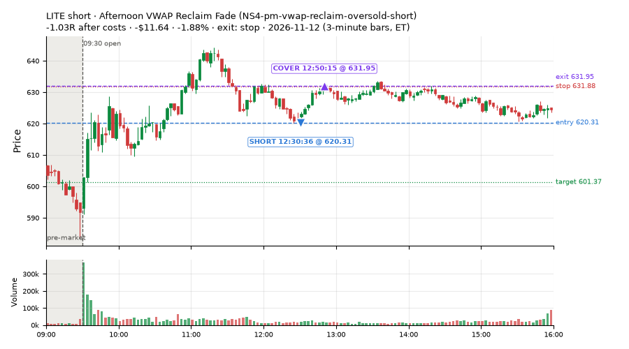
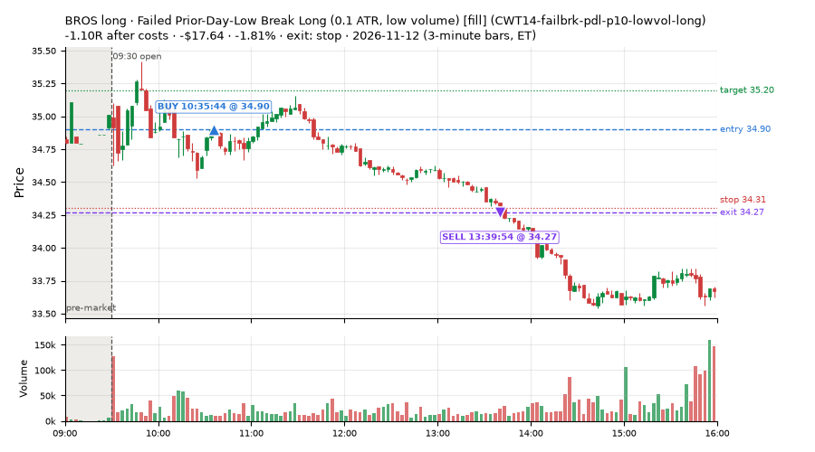
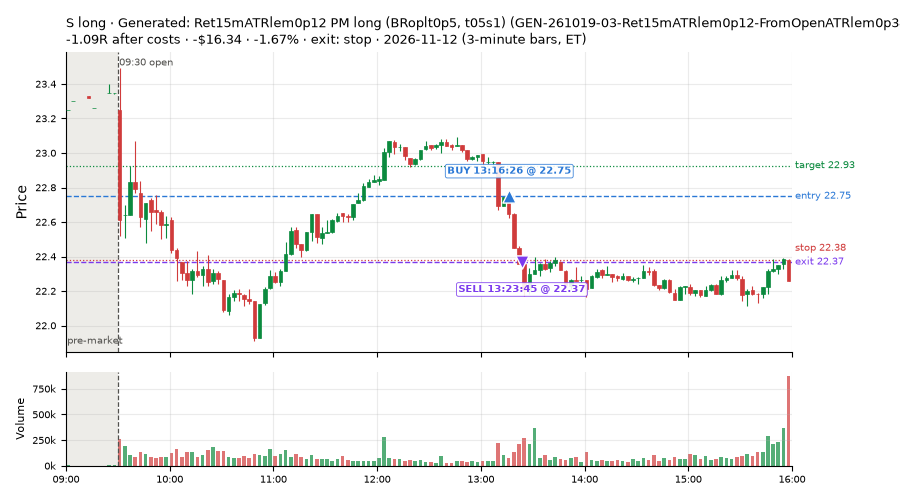

50 trades · win rate 74% · P/L $79.47
PROBATION: no live setup has passed both locked test periods. 10 owner-directed setups added 2026-10-08 (MarcoFlow top 5 + 5 new), untested live. RW6G1 (RW6 + VWAP band guard) added 2026-10-09, probation.

| Symbol | Setup | Side | In | Out | Entry | Exit | Exit reason | % gained | P/L |
|---|---|---|---|---|---|---|---|---|---|
| AXTI | Failed Prior-Day-Low Break Long (0.1 ATR, low volume) [fill] (CWT14-failbrk-pdl-p10-lowvol-long) | long | 10:20 | 10:52 | 42.86 | 44.00 | target | +2.65% | $26.17 |
| CRDO | Failed Prior-Day-Low Break Long (0.1 ATR, low volume) [fill] (CWT14-failbrk-pdl-p10-lowvol-long) | long | 10:20 | 10:51 | 135.82 | 138.54 | target | +2.00% | $19.06 |
| ALAB | Failed Prior-Day-Low Break Long (0.1 ATR, low volume) [fill] (CWT14-failbrk-pdl-p10-lowvol-long) | long | 10:20 | 10:51 | 222.24 | 226.28 | target | +1.82% | $16.16 |
| Symbol | Setup | Side | In | Out | Entry | Exit | Exit reason | % lost | P/L |
|---|---|---|---|---|---|---|---|---|---|
| SOXL | NS4-pm-vwap-reclaim-oversold-short | short | 12:31 | 12:40 | 64.60 | 66.39 | stop | -2.77% | $-26.87 |
| APLD | CWT14-failbrk-pdl-p10-lowvol-long | long | 11:50 | 14:04 | 17.38 | 16.92 | stop | -2.65% | $-26.22 |
| LITE | NS4-pm-vwap-reclaim-oversold-short | short | 12:30 | 12:50 | 620.31 | 631.95 | stop | -1.88% | $-11.64 |
| BROS | CWT14-failbrk-pdl-p10-lowvol-long | long | 10:35 | 13:39 | 34.90 | 34.27 | stop | -1.81% | $-17.64 |
| S | GEN-261019-03-Ret15mATRlem0p12-FromOpenATRlem0p34-SMA20slopege0p29-PM-BRoplt0p5-t05s1-long | long | 13:16 | 13:23 | 22.75 | 22.37 | stop | -1.67% | $-16.34 |








Signal to fill: median 2s, 90th percentile 4s (50 trades). Bars close each minute; the order follows the bar close.
Best excursion (MFE): median 0.51R; worst (MAE) median 0.35R. 24% of trades never got +0.25R in our favour; 0 reached +1R and still closed at or below 0.
| Symbol | Setup | Best R | Worst R | Closed R |
|---|---|---|---|---|
| BROS | CWT14-failbrk-pdl-p10-lowvol-long | +0.44 | -1.03 | -1.10 |
| IBB | CWT14-failbrk-pdl-p10-lowvol-long | +0.38 | -1.26 | -1.12 |
| GD | CWT14-failbrk-pdl-p10-lowvol-long | +0.24 | -1.05 | -1.13 |
| APLD | CWT14-failbrk-pdl-p10-lowvol-long | +0.29 | -1.01 | -1.06 |
| FND | CWT14-failbrk-pdl-p10-lowvol-long | +0.09 | -1.04 | -1.05 |
| Entry time | Trades | Win | Avg R | P/L |
|---|---|---|---|---|
| 09:50-10:30 | 24 | 92% | +0.49 | $160.16 |
| 10:30-11:30 | 8 | 62% | -0.26 | $-34.40 |
| 11:30-13:00 | 11 | 45% | -0.26 | $-52.93 |
| 13:00-14:00 | 3 | 67% | -0.06 | $-5.03 |
| 14:00-16:00 | 4 | 75% | +0.15 | $11.67 |
| Setup | Trades | Win | Avg R after costs | Adj R (net of SPY) | Avg R ex-market (all sessions) | P/L |
|---|---|---|---|---|---|---|
| Panic Flush Reversal (deep, 5x volume) (CWT05-flush-m075-v5-long) | 1.0 | 100% | +0.48 | +0.45 | – | $10.94 |
| Failed Prior-Day-Low Break Long (0.1 ATR, low volume) [fill] (CWT14-failbrk-pdl-p10-lowvol-long) | 34.0 | 79% | +0.23 | -0.19 | +0.02 (beta +0.69, n 34) | $87.64 |
| Generated: Ret15mATRlem0p12 PM long (BRoplt0p5, t05s1) (GEN-261019-03-Ret15mATRlem0p12-FromOpenATRlem0p34-SMA20slopege0p29-PM-BRoplt0p5-t05s1-long) | 2.0 | 50% | -0.37 | -0.31 | – | $-11.53 |
| Afternoon Exhaustion Short, Gap-Down, SPY Up (near-miss) (NM-RWR1-exh150-gapdn-spyup-pm-short) | 1.0 | 100% | +0.41 | +0.27 | – | $6.12 |
| Afternoon VWAP Reclaim Fade (NS4-pm-vwap-reclaim-oversold-short) owner-directed; holdouts once: Sep-Oct -0.086R n49, Apr-Jun -0.080R n342 | 12.0 | 58% | -0.05 | -0.33 | -0.69 (beta -2.35, n 12) | $-13.70 |
Market direction (SPY, beta 1) accounted for $128.24 of today's $79.47; the rest ($-48.77) came from the setups themselves. Avg R net of SPY: -0.21 (incl. a hedge leg's cost; report only).
10 setups live today. Today: 107 signals, 50 taken, 0 lost because another setup held the symbol (0%). Since 2026-11-12 (1 sessions): 107 signals, 50 taken, 0 lost to other setups (0%). Peak open positions today 29 of 200 slots. Earnings blackout removed 576 symbols before scanning.
Simulated playing time (not live): 57 what-if trades of signals not taken, avg -0.08R, 60% winners; of them 0 lost to another setup.
| Prio | Setup | Today sig / taken | Sessions | Signals / taken / trades | Taken/day | Expected/day | Lost to other setups | Lost to (setup n) | Top skip reasons | SIMULATED: not-taken n / avg R / win | Verdict |
|---|---|---|---|---|---|---|---|---|---|---|---|
| 1 | Backside VWAP-Test Short (big runner) CWT04-backside-vwaptest-a25-short | 0 / 0 | 1 | 0 / 0 / 0 | 0.00 | – | 0 | – | – | 0 / – | quiet - wait no signals in 1 session(s); too early to tell |
| 2 | Index Dip Bounce 2 3x S&P IDX2-spy075-0945-3x-trail | 0 / 0 | 1 | 0 / 0 / 0 | 0.00 | – | 0 | – | – | 0 / – | quiet - wait no signals in 1 session(s); too early to tell |
| 3 | * Oversold EMA Cross-Down with Breadth Turning Up (near-miss) LD4-st4-breadthup-t1s05-long | 0 / 0 | 1 | 0 / 0 / 0 | 0.00 | – | 0 | – | – | 0 / – | quiet - wait no signals in 1 session(s); too early to tell |
| 4 | Afternoon Exhaustion Short, Gap-Down, SPY Up (near-miss) NM-RWR1-exh150-gapdn-spyup-pm-short | 2 / 1 | 1 | 2 / 1 / 1 | 1.00 | – | 0 | – | other 1 | 1 / +0.38R / 100% | slow 5.0 entries/week; ~12 weeks to 60 trades |
| 5 | Monday Weak-RS NS3 Short (near-miss) NM-RWN5-ns3-mon-weakrs-short | 0 / 0 | 1 | 0 / 0 / 0 | 0.00 | – | 0 | – | – | 0 / – | quiet - wait no signals in 1 session(s); too early to tell |
| 6 | Panic Flush Reversal (deep, 5x volume) CWT05-flush-m075-v5-long | 2 / 1 | 1 | 2 / 1 / 1 | 1.00 | – | 0 | – | broker rejected 1 | 1 / +0.59R / 100% | slow 5.0 entries/week; ~12 weeks to 60 trades |
| 7 | Generated: NewLOD, Flow3lem0p37 LUNCH short (BRopgt0p5, holdtr) GEN-261026-03-NewLOD-Flow3lem0p37-FromOpenATRlem0p78-LUNCH-BRopgt0p5-holdtr-short | 0 / 0 | 1 | 0 / 0 / 0 | 0.00 | – | 0 | – | – | 0 / – | quiet - wait no signals in 1 session(s); too early to tell |
| 8 | Generated: Ret15mATRlem0p12 PM long (BRoplt0p5, t05s1) GEN-261019-03-Ret15mATRlem0p12-FromOpenATRlem0p34-SMA20slopege0p29-PM-BRoplt0p5-t05s1-long | 4 / 2 | 1 | 4 / 2 / 2 | 2.00 | – | 0 | – | other 2 | 2 / +0.48R / 100% | slow 10.0 entries/week; ~6 weeks to 60 trades |
| 9 | Afternoon VWAP Reclaim Fade NS4-pm-vwap-reclaim-oversold-short | 21 / 12 | 1 | 21 / 12 / 12 | 12.00 | 3.05 | 0 | – | spread / quote / size 4, not shortable / shorts off 3, other 2 | 9 / +0.18R / 56% | ok 60.0 entries/week |
| 10 | Failed Prior-Day-Low Break Long (0.1 ATR, low volume) [fill] CWT14-failbrk-pdl-p10-lowvol-long | 78 / 34 | 1 | 78 / 34 / 34 | 34.00 | – | 0 | – | spread / quote / size 26, other 18 | 44 / -0.18R / 57% | ok 170.0 entries/week |
Every trade is attached as a CSV you can open and edit in Excel or Google Sheets. Live page: https://misiti15.github.io/MCF/live/